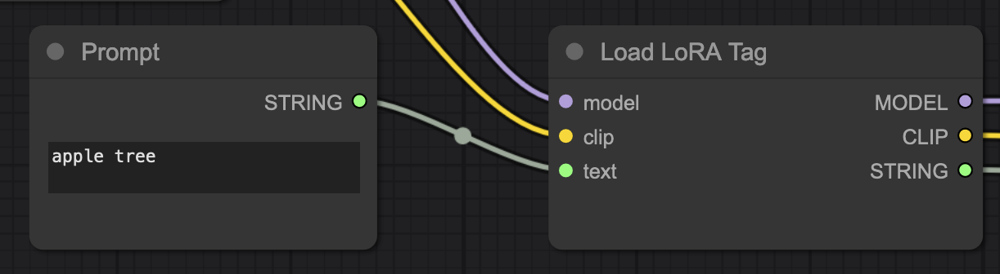
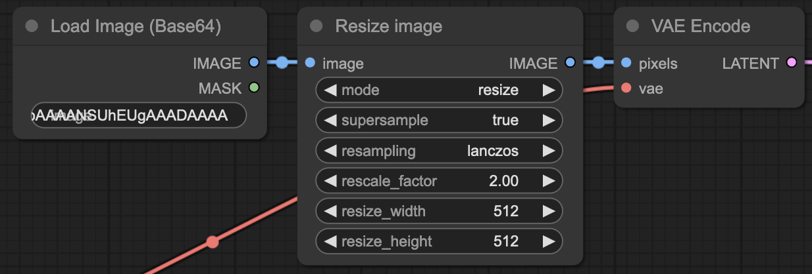

Stable Diffusion（图像生成）
使用本地或云端的 Stable Diffusion、FLUX 或 DALL-E API 生成图像。
自动将图像作为回复生成，以实现完全沉浸式体验；可通过魔杖菜单或斜线命令从聊天历史和角色信息生成图像；也可以在聊天输入栏中使用 /sd (任意内容) 命令，用自定义提示词生成图像。
最常用的 Stable Diffusion 生成设置均可在 SillyTavern 界面中进行自定义。
- 支持
多种图像生成来源 ，包括本地和云端 - 针对角色、场景和自定义提示词的多种
生成模式 - 用于在聊天中轻松生成图像的
斜线命令 交互模式 ，可根据自然语言请求触发图像生成- 可自定义的提示词模板和
前缀 ，用于保持一致的风格和质量 角色专属提示词前缀 ，用于定制角色图像风格预设 ，用于在不同图像生成设置之间快速切换- 灵活的
聊天消息可见性 选项 - 高度可定制的
ComfyUI 集成 工作流 - 在角色图库中
查看所有已生成图像 的功能 图像滑动 功能，可在保持相同提示词的情况下重新生成图像生成前编辑提示词 和扩展自由模式提示词 的选项- 与 AI
函数调用 集成，用于自动检测图像生成意图
支持的来源
生成模式
如何生成图像
- 使用扩展上下文菜单（魔杖）中的"图像生成"选项。
- 输入
/sd (参数)斜线命令，参数来自上方生成模式表格。输入其他内容将触发"自由模式"，让 SD 生成你所描述的任何内容。例如：/sd apple tree将生成一张苹果树的图片。 - 在聊天消息的上下文操作中查找画笔图标。这将对所选消息强制使用"原始消息"模式。
除原始消息和自由模式之外，每种生成模式都会触发使用当前选定的主要生成 API 将聊天内容转换为 SD 提示词的过程。你可以在扩展面板的"SD 提示词模板"设置抽屉中，为每种生成模式配置提示词生成的指令模板。
/sd 命令使用技巧
查看所有已生成图像
要查看某个角色所有已保存的图像（包括其他聊天），可以从角色信息面板的"更多..."下拉菜单中打开图库，或使用 /show-gallery 斜线命令。
指定负面提示词
在提示词前使用 negative 命名参数，可为本次生成强制指定一个特定的负面提示词。
/sd negative="fries" cute tater farmer holding a tayto in a spud-field包含角色专属前缀
在自由提示模式下，使用特殊的 {{charPrefix}} 宏，可将当前角色的正面和负面提示词前缀（若已定义）包含进去。
/sd {{charPrefix}}, riding a bike抑制聊天消息
通过传递 quiet=true 命名参数，可以避免将生成的图像发布到聊天中。图像仍会被添加到角色图库，且该命令将输出图像的相对 URL，可供其他命令使用。
以下示例将以用户人设的身份通过 Markdown 发送生成的图像。
/sd quiet=true me | /send Here's a picture of me: 图像滑动
图像滑动允许在保持相同提示词的情况下重新生成图像。如果设置了固定种子值，下次生成时将随机化。通过 /sd 斜线命令覆盖的图像尺寸在滑动图像时会被保留。
将鼠标光标悬停在生成的图像上（移动端则点击），可显示箭头按钮和滑动计数器。点击最新图像上的右箭头将生成一张新图像。
"滑动"在这里只是一个名称，不要尝试实际的滑动手势，因为这会重新生成消息本身，而不是附加的图像。
选项
生成前编辑提示词
此选项允许你在将自动生成的提示词发送给图像生成 API 之前进行编辑。你也可以编辑或丢弃已保存的负面提示词，并在重新生成最初由 /sd 命令创建的图像时覆盖分辨率。
使用函数工具
使用函数调用自动检测生成图像的意图。
要求：
- 必须已配置支持的图像生成来源。
- 必须使用支持函数工具调用的 Chat Completion API 模型，并在 AI 响应设置中启用函数工具调用。
- 必须在图像生成设置中启用"使用函数工具"选项。
- 用户应在聊天消息中表达生成图像的意图，例如"给我发一张猫的图片"。
启用函数工具后，交互模式将不会触发。
使用交互模式
允许你触发图像生成，而非文字，作为对符合特定规则的用户消息的回复：
- 包含以下动词之一：send、mail、imagine、generate、make、create、draw、paint、render
- 后跟以下名词之一（距离不超过10个字符）：pic、picture、image、drawing、painting、photo、photograph
- 后跟图像生成的目标主体，可选地以"of a"或"of this"等短语开头。
有效请求及捕获主体示例：
Can you please send me a picture of a cat=>catGenerate a picture of the Eiffel tower=>Eiffel towerLet's draw a painting of Mona Lisa=>Mona Lisa
某些特殊主体会触发预定义的生成模式：
- 'you'、'yourself' => "Yourself"
- 'your face'、'your portrait'、'your selfie' => "Your Face"
- 'me'、'myself' => "Me"
- 'story'、'scenario'、'whole story' => "The Whole Story"
- 'last message' => "The Last Message"
- 'background'、'scene background'、'scene'、'scenery'、'surroundings'、'environment' => "Background"
扩展自由模式提示词
使用交互模式或斜线命令时，通过调用主要 API 自动扩展自由模式生成主体的描述。
最小化提示词处理
启用后，减少对 LLM 返回的图像生成提示词的处理。仅执行规范化和空白字符压缩，跳过默认的激进清理步骤。适用于接受 JSON 等结构化提示词格式的高级工作流（如 ComfyUI）。
对齐自动调整的分辨率
将带有强制宽高比（竖向、横向）的图像生成请求对齐到最近的已知分辨率，同时尽量保持总像素数不变。可参考"分辨率"下拉菜单查看可选项。
建议用于 SDXL 模型。
通用提示词前缀
专业提示
使用 {prompt} 宏来指定生成的提示词将被插入的确切位置。
在每个生成的提示词或自由模式提示词前添加。常用于设置图片的整体风格。
示例：best quality, anime lineart。
负面提示词
描述你不希望出现在输出图像中的特征。
示例：bad quality, watermark。
角色专属提示词前缀
专业提示
如果生成来源支持，你也可以在此处使用 LoRA/嵌入，例如：<lora:DonaldDuck:1>。
描述当前所选角色特征的任何内容。将添加在通用前缀之后。
示例：female, green eyes, brown hair, pink shirt。
你也可以为不想要的内容指定负面提示词前缀。它将与通用负面提示词合并使用。
限制：
- 仅在一对一聊天中生效，不适用于群聊。
- 不用于背景和自由模式生成。
注意
要强制在自由模式提示词中包含角色前缀，可在提示词的任意位置使用 {{charPrefix}} 宏。
如果你想与他人共享这些前缀，请勾选"可共享"复选框。这将把它们与角色数据一起保存，而不是保存在你的本地设置中。
风格
使用此功能快速保存和恢复你最喜欢的风格/质量预设，以便在稍后或切换模型时使用。风格预设包含以下内容：
- 通用提示词前缀
- 负面提示词
你也可以使用 /imagine-style 命令（或 /sd-style、/img-style）在风格之间切换。
聊天消息可见性
插入聊天中的生成图像在主 API 提示词中默认是隐藏的，但可以针对每个生成触发器（"魔法棒"图标、斜线命令、交互模式）单独覆盖此设置。这可以让角色"认可"图像，从而增强沉浸感。如果启用了"发送内联图像"，Chat Completions API 中的多模态模型也可能"看到"这些图像。
可以通过更改图像提示词模板下的"聊天消息模板"来自定义文本消息。所有常规宏均可用于此模板，此外还有一个特殊的 {{prompt}} 宏，用于指定图像提示词将被添加的位置。
ComfyUI 配置
ComfyUI 是一个快速且非常灵活的图像生成选项。
如果你熟悉 ComfyUI，简而言之：在 ComfyUI 中制作你的工作流，以 API 格式下载，然后粘贴到 SillyTavern 的 ComfyUI 工作流编辑器中。ST 会将你的工作流提交给 ComfyUI 的 API，你将在聊天中收到一张图像。但能力越大，责任越大——主要责任是在工作流 JSON 中插入占位符，以便从 SillyTavern 更改设置。
如果你不熟悉 ComfyUI，你仍然可以使用默认工作流在 SillyTavern 中生成图像。之后，当你想要更强大的功能时，可以学习如何使用 ComfyUI……
控制面板
此面板允许你配置和管理 ComfyUI 与 SillyTavern 的集成。
服务器类型
- 标准服务器：直接调用 ComfyUI，无论是在本地机器上还是托管在其他地方。
- RunPod 无服务器端点：通过 RunPod 的无服务器 API 运行 ComfyUI。无服务器是远程生成的好选择，它提供与标准服务器相同的工作流控制能力，同时可以利用更强大的托管 GPU，且只在主动生成图像时计费。大部分用法相同，与标准服务器设置和行为的差异
详见下文 。
标准服务器设置
在 ComfyUI URL 输入框中输入你的 ComfyUI 服务器 URL，默认值为 http://127.0.0.1:8188。如果你使用的是 SwarmUI，托管 ComfyUI 服务器的默认端口为 7821，比 SwarmUI 的默认端口高 20。
输入 URL 后，点击 连接 以验证并建立连接。ComfyUI 服务器必须可从 SillyTavern 主机访问。
ComfyUI RunPod 设置
- 你需要一个 RunPod 账户并充值一些金额。在 RTX 4090 上使用 Qwen 图像生成，每张图像大约花费 2 美分（实际费用可能有所不同）。充值 5 美元应该可以使用较长时间。
- https://console.runpod.io/hub/runpod-workers/worker-comfyui 是一个 flux1 dev 配置，可用于创建你自己的无服务器端点。其中有关于如何创建自己的配置以使用不同模型或添加 LoRA 的说明。
- 创建用于访问无服务器端点的 API 密钥：https://console.runpod.io/user/settings
- 在 ST 中，选择 ComfyUI 作为来源，选择 RunPod 无服务器端点作为服务器类型。
- 将 ComfyUI RunPod URL 设置为你的端点 URL。
- 设置 API 密钥。
- 点击连接。如果 API 密钥和 URL 正确，你将看到成功提示。
- ComfyUI 工作流配置流程与本地相同。
- 使用"导出（API 格式）"选项。
- 根据你的本地设置，你可能需要为 RunPod 选择不同版本的模型。例如，如果你在本地使用量化的 GGUF，但想在 RunPod 上使用 fp16 版本，需要在 ST 使用的 JSON 工作流中进行相应更改。
- 模型、采样器、VAE 等无法动态确定，因此你的工作流需要将这些硬编码（不使用
%model%替换）。 - 其他替换的工作方式与本地相同。
注意
无服务器配置目前不会将工作流嵌入输出图像中。也就是说，你无法将图像拖放到本地 ComfyUI 中查看种子或提示词。这只是 RunPod 处理器的限制，该功能可以在其侧添加。
工作流管理
从下拉菜单中选择一个 ComfyUI 工作流。提供了两个默认工作流：
- Default_Comfy_Workflow.json：支持最常见图像生成设置的基础文本到图像工作流。
- Char_Avatar_Comfy_Workflow.json：使用角色头像及提示词生成图像的示例图像到图像工作流。
使用以下按钮管理你的工作流：
- 打开工作流编辑器，查看和修改所选工作流。
- 创建新工作流，以自定义名称创建新工作流。
- 删除工作流，移除所选工作流。
工作流编辑器
ComfyUI 工作流编辑器允许你查看和修改用于 SillyTavern 的 ComfyUI 工作流。
编辑器的主要组件是一个大型文本区域，你可以在此处以 JSON 格式插入或编辑 ComfyUI 工作流。
要将 ComfyUI 工作流添加到编辑器，请按照以下步骤操作：
- 在 ComfyUI 设置中启用"开发者模式"。
- 使用 ComfyUI 中的"保存（API 格式）"选项下载 JSON 数据。
- 在 SillyTavern 中创建新工作流并打开编辑器。
- 将下载的 JSON 数据粘贴到文本区域中。
- 根据你的使用场景，将特定值替换为占位符。
提示
你可以将 API 格式的 JSON 文件直接添加到 SillyTavern 安装目录中的 data/default-user/user/workflows 目录。这样可以省略第 3 步和第 4 步。
保留原始 JSON 文件。如果你需要在 ComfyUI 中再次打开工作流进行修改，编辑包含所有占位符的原始文件会方便得多。
占位符
编辑器提供了一系列预定义占位符，可在工作流 JSON 中使用。当工作流在 SillyTavern 中执行时，这些占位符将被替换为动态值。
标有 ✅ 的占位符存在于你的工作流 JSON 中，标有 ❌ 的占位符不在其中。你可以根据需要将这些占位符添加到工作流 JSON 中。你不需要添加所有占位符，只需添加工作流使用且需要动态替换的那些。
提示词
%prompt% 和 %negative_prompt% 占位符用于将图像生成提示词插入工作流。这些包含 SillyTavern 生成的最终提示词，包括所选 /sd 模式的生成提示词、通用提示词前缀、负面提示词和角色专属提示词前缀。
例如，你可能在 ComfyUI 中用"forest elf"测试了你的工作流。要在 SillyTavern 中使用此工作流，可以将"forest elf"提示词替换为 %prompt% 占位符：
{
"class_type": "CLIPTextEncode",
"inputs": {
"clip": ["4", 1],
"text": "%prompt%"
}
}{
"class_type": "CLIPTextEncode",
"inputs": {
"clip": ["4", 1],
"text": "forest elf"
}
}注意占位符被双引号包裹。这对 JSON 格式非常重要，也是 SillyTavern 占位符替换系统的要求。即使是数字，也必须在模板 JSON 中使用双引号。
有时提示词（或其他值）可能不会出现在你预期的位置。如果节点在 API 模式下不是工作流运行所必需的，ComfyUI 会在 API 版本中将其移除。
例如，此工作流使用了一个带有提示词原语的 LoRA 标签加载器节点，以便在 UI 模式下工作流更清晰：

提示词原语节点将从工作流的 API 版本中移除，因此你需要在 LoraTagLoader 节点中插入占位符。在工作流中找到"apple tree"并将其替换为 %prompt% 占位符：
{
"inputs": {
"text": "%prompt%",
"model": ["112", 0],
"clip": ["112", 1]
},
"class_type": "LoraTagLoader",
"_meta": {"title": "Load LoRA Tag"}
}{
"inputs": {
"text": "apple tree",
"model": ["112", 0],
"clip": ["112", 1]
},
"class_type": "LoraTagLoader",
"_meta": {"title": "Load LoRA Tag"}
}在某些情况下，即使提示词在 UI 中只出现一次，你也可能需要在工作流 JSON 中进行多处替换。
模型
%model% 占位符将插入图像生成设置中所选模型的值。
以下是默认文本到图像工作流中的示例：
{
"class_type": "CheckpointLoaderSimple",
"inputs": {
"ckpt_name": "%model%"
}
}{
"class_type": "CheckpointLoaderSimple",
"inputs": {
"ckpt_name": "sd15.safetensors"
}
}要加载 GGUF 量化的 UNet，在工作流中使用 UNet Loader (GGUF) 节点，在 SillyTavern 模型下拉菜单中选择 GGUF 模型，并在节点设置中使用 %model% 占位符，如下所示：
{
"inputs": {
"unet_name": "%model%"
},
"class_type": "UnetLoaderGGUF",
"_meta": {
"title": "Unet Loader (GGUF)"
}
}{
"inputs": {
"unet_name": "flux1-dev-Q4_0.gguf"
},
"class_type": "UnetLoaderGGUF",
"_meta": {
"title": "Unet Loader (GGUF)"
}
}如果你在 ComfyUI 中使用了通常 SD checkpoint 以外的模型类型
Stable Diffusion checkpoint、SD UNet 和 GGUF 量化的 UNet 都会出现在模型下拉菜单中。 一种类型的模型无法与期望另一种类型的工作流/加载器节点配合使用。 如果你在 ST 中选择了不兼容的模型类型，ComfyUI 将报告加载器节点的问题。
头像图像
使用 %user_avatar% 和 %char_avatar% 占位符，可在工作流中包含用户和角色头像。执行工作流时，这些占位符将被替换为头像的 PNG 数据。图像数据以 base64 格式编码，因此你必须在工作流中对其进行解码。常用选择是 Load image (Base64) 节点。
在此示例中，角色头像通过 Load Image (Base64) 节点加载。它还使用了一个图像缩放节点，将图像缩放至图像生成设置中指定的尺寸：

将 %char_avatar%、%width% 和 %height% 占位符插入 Load Image (Base64) 和 Image Resize 节点的 JSON 中：
{
"97": {
"inputs": {
"image": "%char_avatar%"
},
"class_type": "ETN_LoadImageBase64",
"_meta": {"title": "Load Image (Base64)"}
},
"98": {
"inputs": {
"mode": "resize",
"resize_width": "%width%",
"resize_height": "%height%",
"image": ["97", 0]
},
"class_type": "Image Resize",
"_meta": {"title": "Resize image"}
}
}要获取用于在 ComfyUI 中测试工作流的 base64 编码图像字符串，可使用任何将图像转换为 base64 字符串的在线工具。以下是一个可用于初始测试的示例字符串：sd-comfy-base64-test-string.txt。
其他占位符
大多数其他占位符使用图像生成设置中相应控件的值，或你通过 /sd 命令指定的值：
%vae%，但大多数 SD 模型已包含 VAE，因此默认工作流不使用此占位符。可在自定义工作流中使用它来随 UNet 加载 VAE、覆盖默认 VAE 等。%sampler%%scheduler%%steps%%scale%%width%%height%%denoise%：用于示例图像到图像工作流，变化范围约为 0.5（对源图像几乎不可察觉的变化）到 1.0（与未使用源图像时完全不同的图像）。默认文本到图像工作流不使用此项，因为文本到图像使用 1.0 以外的值没有意义。%clip_skip%：默认工作流不使用，但可用于自定义工作流。
%seed% 占位符将插入控件中指定的种子值。如果将种子设置为 -1，SillyTavern 将为每张图像在 %seed% 中生成一个新的随机种子。
自定义占位符
你可以在工作流中添加自定义占位符：
- 找到预定义占位符下方的"自定义"部分。
- 点击"+"按钮添加新的自定义占位符。
- 在
find字段中输入占位符名称。 - 在
replace字段中输入要替换占位符的值。
自定义占位符将显示在预定义占位符下方的单独列表中。
例如，你可以使用自定义占位符替换默认工作流中保存图像文件名的"SillyTavern"前缀。添加一个 find 设置为 filename_prefix、replace 设置为 ServiceTensor 的新自定义占位符，并在工作流 JSON 中插入新的 %filename_prefix% 占位符。现在，你可以通过更改自定义占位符的值，将文件名前缀从 SillyTavern 改为 ServiceTensor。
{
"class_type": "SaveImage",
"inputs": {
"filename_prefix": "%filename_prefix%",
"images": ["8", 0]
}
}{
"class_type": "SaveImage",
"inputs": {
"filename_prefix": "SillyTavern",
"images": ["8", 0]
}
}Comfy 技巧
阅读本页的所有常规信息，以熟悉图像生成选项。可切换风格和通用提示词前缀等选项与 ComfyUI 工作流的完全灵活性相结合，可以创建各种各样的图像生成设置。
加载 LoRA
使用 LoRA 标签加载器节点（如 Load LoRA Tag）加载提示词中指定的任何 LoRA。现在你可以使用 <lora:CroissantStyle:0.8> 这样的标签在提示词中添加任意数量的 LoRA，它们将被加载到你的工作流中。这也将使在
通过风格或斜线命令设置工作流值
你可以在自定义占位符值中使用宏。举个实际例子，假设你有时想生成没有背景的图像，并希望通过斜线命令或图像风格进行切换。以下是操作方法：
- 制作一个 ComfyUI 工作流，根据输入值的不同来决定是否移除图像背景
- 使用自定义占位符来设置该输入的值，但将
{{getvar::remove_background}}作为替换值 - 现在你可以在生成图像前用
/setvar key=remove_background true或/setvar key=remove_background false来设置remove_background的值 - 工作流将使用你设置的值来决定是否移除背景
- 创建一个名为"No background"的图像风格，通用提示词前缀为
{{setvar::remove_background::true}} - 使用风格控件或
/imagine-style No background在生成图像前将remove_background的值设置为true